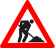

En esta lección se proponen ejercicios para conocer y utilizar Drupal. Se pueden consultar las soluciones de estos ejercicios de Drupal, aunque se recomienda intentar realizarlos primero sin recurrir a estas soluciones.
No he terminado de actualizar estos ejercicios a la versión Drupal 8.2.
Drupal (1) 1 - Descargar
Como un ejercicio posterior consiste en la actualización de Drupal, en este ejercicio no se debe descargar la última versión de Drupal.
Visite la página web del proyecto Drupal.
Descargue la versión Drupal 8.2.0 (en inglés), publicada el 5 de octubre de 2016. Se recomienda esa versión ya que estos ejercicios se han preparado para ella.
Si la versión Drupal 8.2.0 ya no está disponible en la web del programa, puede descargarla desde la página de Descarga de aplicaciones.
Descomprima Drupal en una carpeta drupal (sin número de versión), en la ruta adecuada para poder ejecutarlo en el servidor local.
No instale Drupal todavía.
Drupal (1) 2 - Instalar
En este ejercicio se instalará Drupal en español, utilizando como base de datos MySQL/MariaDB.
La instalación de Drupal en Windows presenta algunos problemas. Si dispone de tiempo, intente resolverlos sin consultar la ayuda proporcionada en cada apartado o la página de soluciones.
Ajustes previos
De estos tres ajustes el primero es necesario, el segundo puede serlo y el tercero simplemente debe comprobarse.
Extensión mod_rewrite de Apache
Para que los enlaces internos de Drupal apunten a las direcciones correctas, active la directiva RewriteBase en .htaccess de Drupal, dándole el valor adecuado (lea los comentarios de esta directiva en el propio fichero para saber qué escribir).
Tiempo de ejecución de los scripts
En versiones anteriores de Drupal, la instalación solía abortarse porque algún paso de la instalación tardaba bastante en realizarse:
Drupal 8.2 no parece tener ese problema, pero por precaución se podría aumentar el tiempo de espera máximo de ejecución de un script de PHP aumentando el valor de la directiva max_execution_time por ejemplo a 60 minutos (3600 segundos) (recuerde reiniciar el servidor tras el cambio). Una vez realizada la instalación y actualización, devuelva la directiva a su valor original (por ejemplo, 30 segundos).
Extensión fileinfo
Drupal utiliza la extensión fileinfo para detectar el tipo MIME de los archivos. Esta extensión ya se encuentra activada en XAMPP 7.0, pero compruebe que es así.
Instalar
Cree con phpMyAdmin un usuario de MySQL/MariaDB con nombre iaw_drupal_1, contraseña iaw_drupal_1 y base de datos iaw_drupal_1.
Instalación
Abra Drupal. Drupal iniciará el asistente de instalación, que va preguntando las opciones de configuración deseadas. A continuación se comentan algunas opciones a elegir:
Choose language
Elija el idioma español.
Verificar requisitos: Configurar cURL
Al elegir instalar Drupal en un idioma distinto del inglés (por ejemplo, en español), el instalador de Drupal no consigue conectarse con el servidor de traducciones.
Ayuda
Para resolver este problema, en Windows se debe descargar un certificado para cURL (cacert.pem), por ejemplo desde https://curl.haxx.se/docs/caextract.html, y copiarlo en C:\Windows.
Además, PHP debe saber la ubicación del certificado:
[curl]
curl.cainfo = "C:\Windows\cacert.pem"
Seleccionar un perfil de instalación
Elija el perfil Estándar.
Verificar requisitos: Extensión OPCache
El instalador de Drupal recomienda activar OPCache en PHP.
Ayuda
Para activar y configurar OPCache en PHP, puede aplicar la solución propuesta en este foro de Drupal.
Configurar base de datos
Introduzca los datos del usuario de MySQL.
Instalar perfil
Configurar traducciones
Puede que se muestren avisos sobre errores en las traducciones.
Configurar sitio
Nombre del sitio web: Mi Drupal
Correo electrónico del sitio: midrupal@example.com
Nombre de usuario: admin
Contraseña: admin
Dirección de correo electrónico: admin@example.com
País predefinido: España
Zona horaria predefinida: Europe/Madrid
Comprobar actualizaciones automáticamente: Marcar
Recibir notificaciones por correo electrónico: Desmarcar
Fin de la instalación
Cuando termine la instalación se mostrará la página de Drupal con el menú de administración en la parte superior:
Comprobación de la instalación
Cierre la sesión y compruebe que se puede ver ver la página inicial de Drupal:
Compruebe que puede Iniciar sesión como administrador y salir de ella correctamente
Si no puede entrar porque los enlaces no son correctos, corrija la directiva RewriteBase en el fichero .htaccess de Drupal (probablemente esa es la causa del error) y a continuación, abra la página drupal/user, entre como administrador, abra la página de Configuración del sitio y guarde la configuración sin modificar nada.
Ajustes post-instalación
Como administrador, entre la página de Configuración y abra el informe de estado, en el que podrá ver el siguiente aviso:
Visite la página enlazada en el aviso anterior para saber en qué consiste este problema y cómo corregirlo.
Una vez corregido, compruebe que el problema ha desaparecido:
Drupal (1) 3 - Hacer una copia de seguridad manual completa
Realice la copia de seguridad de la base de datos como usuario iaw_drupal_1, no como root de MySQL.
En este ejercicio se hará una copia de seguridad de Drupal.
Realice una copia de seguridad manual completa de la instalación (en los nombres de archivo propuestos AA es el año, MM el mes, DD el día y NN el número de copia del día):
Comprima los archivos de la carpeta drupal en un archivo comprimido (por ejemplo, drupal_backup_archivos_AAMMDDNN.zip).
Como usuario iaw_drupal_1, exporte todas las tablas de la base de datos iaw_drupal_1 a un fichero sql (por ejemplo, drupal_backup_db_AAMMDDNN.sql).
Escriba un archivo que explique qué se ha comprimido (por ejemplo, drupal_backup_leeme_AAMMDDNN.txt).
Comprima todo lo anterior en un único zip (por ejemplo, drupal_backup_AAMMDDNN.zip).
Una vez realizada la copia, borre los archivos del disco y borre todas las tablas de la base de datos
Restaure la copia de seguridad.
Compruebe que Drupal funciona correctamente.
Drupal (1) 4 - Actualizar manualmente
En este ejercicio se actualizará Drupal a una versión posterior a la que se instaló inicialmente
Si se ha instalado la versión Drupal 8.0.1, la siguiente versión disponible actualmente (enero de 2016) es la versión 8.0.2 publicada el 6 de enero de 2016.
Referencias:
Enterarse de la existencia de actualizaciones
Entre en Drupal como usuario admin.
En Drupal 7, si había una actualización de seguridad disponible, Drupal mostraba un aviso en cualquier página. No sé si Drupal 8 mostrará este aviso cuando haya actualizaciones de seguridad disponibles.
Actualizar este apartado cuando Drupal 8 publique una actualización de seguridad.
Busque en el menú de administración de Drupal la página que muestra los elementos pendientes de actualización.
Realizar la actualización
Para evitar que otros usuarios intenten modificar páginas mientras se realiza la actualización, antes de iniciar la actualización se aconseja pasar Drupal a Modo de Mantenimiento. Busque en el menú de administración de Drupal la página para hacerlo.
Al pasar a modo de mantenimiento, Drupal muestra a los usuarios una pantalla fija.
En Drupal 8, el aviso de sitio en mantenimiento no parece mostrarse en todas las páginas, como sí hacía en Drupal 7. No sé si se debe a OPcaché.
Si hay que volver a entrar como administrador y no se puede hacer clic en Iniciar sesión, se puede hacer escribiendo la dirección drupal/user.
Siempre que se hace una actualización, se recomienda hacer previamente una copia de seguridad completa de Drupal (archivos y base de datos), aunque como en el ejercicio anterior ya se ha realizado una copia de seguridad completa, en este ejercicio no es necesario volverla a realizar.
Descargue la nueva versión y lea el archivo UPGRADE.txt, apartado MINOR VERSION UPDATES, que contiene las instrucciones específicas de actualización (pueden cambiar de una versión a otra).
Lleve a cabo los pasos necesarios indicado sen el archivo UPGRADE.txt.
Si todo va bien, Drupal mostrará la página final:
Desactive el modo de mantenimiento.
Compruebe que en la página correspondiente se indica que Drupal está actualizado.
Drupal (1) 5 - Actualizar la traducción al español manualmente
Compruebe si hay actualizaciones de las traducciones pendientes y,en su caso, actualice la traducción de Drupal.
En Drupal 8 no he podido ver cómo se hacen las actualizaciones de la traducción porque hasta ahora me dice siempre que están actualizadas. Cuando lo haga, pondré aquí las capturas correspondientes.
Drupal (1) 6 - Acceder desde otros ordenadores
Acceso con alias y dirección ip desde el propio ordenador
Cree un alias para poder abrir Drupal mediante la dirección http://localhost/drupal/. Compruebe que puede abrir Drupal mediante esa dirección y entrar como administrador.
Será necesario modificar la directiva RewriteBase del archivo .htaccess de Drupal incluyendo la nueva ruta.
Si no se muestra el logo de Drupal o los enlaces no son correctos y no le permiten Iniciar sesión, abra la página /drupal/user, entre como administrador, abra la página de Configuración del sitio y guarde la configuración sin modificar nada.
Averigüe la IP de su ordenador (AAA.BBB.CCC.DDD).
Compruebe que puede entrar como usuario o administrador mediante la dirección http://AAA.BBB.CCC.DDD/drupal/
Será necesario añadir la IP en la configuración de servidores de confianza.
Acceso con alias y dirección ip desde otro ordenador perteneciente a la misma red o desde una máquina virtual en el mismo ordenador
Compruebe que puede entrar correctamente en Drupal como usuario o administrador mediante la dirección http://AAA.BBB.CCC.DDD/drupal/.
Drupal (1) 7 - Instalar otra copia de Drupal aprovechando la copia de seguridad
Cree con phpMyAdmin un usuario de MySQL con nombre iaw_drupal_2, contraseña iaw_drupal_2 y base de datos iaw_drupal_2.
Descomprima la copia de seguridad de los archivos realizada en el ejercicio Drupal (1) 3 en una carpeta drupal_2.
Restaure la copia de seguridad de la base de datos realizada en el ejercicio Drupal (1) 3 en la base de datos iaw_drupal_2.
Modifique los archivos de configuración de Drupal2 de manera que se pueda utilizar de forma independiente de la primera instalación realizada (como mínimo, .htacess y default.settings.php).
Compruebe que puede entrar como usuario o administrador mediante la dirección /drupal_2.
Si al intentar entrar en el segundo Drupal, algunos enlaces no son correctos y redirigen al primer Drupal, abra la página /drupal/user, entre como administrador, abra la página de Configuración del sitio y guarde la configuración sin modificar nada.
Tendría que aclarar si habría que cambiar $settings['hash_salt'] en settings.php.